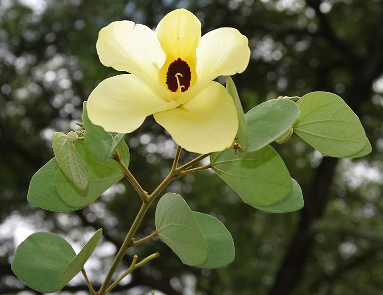

येलो बौहिनियाYellow Bauhinia
Bauhinia tomentosa · Fabaceae · FLR-0347

- Scientific name वैज्ञानिक नाम
- Bauhinia tomentosa L.
- Family कुल
- Fabaceae
- Hindi हिंदी
- येलो बौहिनिया
- Local names स्थानीय नाम
- yellow bauhinia, peela kachnar, bauhinia tomentosa, yellow orchid tree, kanchan
- Status here यहाँ की स्थिति
- native
- Movement आवागमन
- Resident, here all year
- Known from कहाँ दर्ज
- Others have published records from the wider Awadh–Purvanchal plain, none yet from Basti–Ayodhya अवध–पूर्वांचल से दूसरों के प्रकाशित अभिलेख, बस्ती–अयोध्या से अभी नहीं
- IUCN IUCN
- not evaluated
- Review समीक्षा
- not yet reviewed
When to look कब देखें
Expected mainly in June, July, August, September, October, November. मुख्यतः जून, जुलाई, अगस्त, सितंबर, अक्टूबर, नवंबर में अपेक्षित।
Uses and possibilities उपयोग और संभावनाएँ
“Traditional medicine” means a documented traditional use, not a claim that it works. Nothing on this page is medical advice.
Drawn from the documented uses in the profile below, where each is labelled traditional, current or a research lead. All uses →
Tell it apart from इनसे अलग पहचानें
येलो बौहिनिया / Yellow Bauhinia
Bauhinia tomentosa L. — Fabaceae
येलो बौहिनिया — बागीचों और जंगलों के किनारों पर पाई जाने वाली एक आकर्षक और विशिष्ट पीले फूलों वाली झाड़ी। इसे आमतौर पर 'पीला कचनार' या 'कांचन' कहा जाता है। इसके लटकते हुए घंटी जैसे हल्के नींबू-पीले फूलों की ऊपरी पंखुड़ी के आधार पर एक गहरा जामुनी या कत्थई धब्बा होता है। इसके पत्ते ऊंट के खुर की तरह दो हिस्सों में बंटे होते हैं।
Quick Identification त्वरित पहचान
| Feature | Description |
|---|---|
| Habit | Erect, branched, woody deciduous shrub or small slender tree |
| Leaves | Bilobed, broader than long, softly velvety-pubescent beneath |
| Flowers | Drooping, bell-shaped, pale sulphur-yellow with a deep maroon basal throat spot |
| Petals | Five, imbricate, forming a cup-like bell that does not open fully flat |
| Pods | Flat, velvety-pubescent, pointed brown legume containing multiple seeds |
Field tip: Look in late monsoon in garden shrubberies for a tall bush with camel-foot leaves bearing nodding, bell-shaped yellow flowers with a dark purple eye in the centre.
हिंदी — कैसे पहचानें: लटकते हुए घंटी जैसे हल्के पीले फूल, फूल के अंदर गहरा जामुनी धब्बा, और दो फांक वाली रोएंदार पत्तियां।
Morphology आकारिकी
Shrub description: Erect shrub or small slender tree. Bark smooth, greyish-brown; young branchlets slender, terete, densely tomentose with soft fulvous hairs. Leaves alternate, petiolate, suborbicular, broader than long, base rounded or truncate, bilobed one-third down into two rounded or obtuse lobes, seven to nine nerved from base; upper surface glabrous, lower surface softly greyish-downy or pubescent with prominent reticulations. Inflorescence short, leaf-opposed, one to three flowered; pedicels hairy, bracts linear. Calyx tube cylindrical, limb spathaceous, tomentose, splitting down one side. Petals five, subequal, obovate, pale sulphur-yellow, upper petal with a conspicuous dark purple, maroon, or brownish-black blotch at the interior base. Stamens ten, all fertile. Pod linear-oblong, flat, straight, clothed with fine velvety tomentum, five to ten seeded.
हिंदी: यह एक मध्यम आकार की झाड़ी है।
Behaviour & Ecology व्यवहार और पारिस्थितिकी
- Nodding Flower Orientation: The pendulous bell-shaped flowers hang downward, protecting internal nectar from monsoon rains.
- Pollinator Access: Attracts heavy-bodied carpenter bees (Xylocopa) and bumblebees that force their way into the semi-closed floral bell.
- Tomentose Defence: Soft velvety hairs on the undersides of leaves and young pods deter sap-sucking insects and leaf miners.
- Pod Twisting Dehiscence: Dry legumes split under solar heat, each valve twisting spirally to eject smooth seeds onto surrounding soil.
हिंदी: इसके फूल नीचे की ओर लटके रहते हैं जिससे बारिश का पानी अंदर नहीं जाता। भंवरे फूल के अंदर घुसकर रस पीते हैं और परागण करते हैं।
Life Cycle / Phenology जीवन चक्र
- Bud Initiation: Flower buds develop on new leafy twigs during the peak rainy months of July and August.
- Peak Bloom: Showy yellow blossoms appear continuously through post-monsoon autumn until November.
- Pod Maturation: Flat velvety pods swell through autumn, turning brown and woody in winter.
- Leaf Shedding: Partially deciduous during cool dry winter months, renewing fresh velvety foliage in spring.
हिंदी: बरसात में नई टहनियों पर कलियां आती हैं और नवंबर तक फूल खिलते हैं। सर्दियों में फलियां पकती हैं।
Associated Species / Interactions संबंधित प्रजातियाँ
- Butterfly Larval Food: Host plant for larvae of the common emigrant (Catopsilia pomona) and common wanderer (Pareronia hippia).
- Bee Associates: Frequently visited by large carpenter bees and honeybees foraging for nectar, while house sparrows forage for insects among the foliage.
- Shelter Associations: Provides dense foliage cover for Indian garden lizards, frequently growing in hedges alongside neem trees.
हिंदी: पीली तितलियों की इल्लियां इसकी पत्तियां खाती हैं। भंवरे और मधुमक्खियां इसके फूलों पर आते हैं।
Pests and Diseases कीट और रोग
- Foliage Feeders: Emigrant butterfly caterpillars can cause noticeable defoliation on young branch tips.
- Pod Beetles: Seed-boring weevils infest developing legume seeds inside the pods.
- Sooty Mould: Secondary fungus occasionally grows over insect secretions on shaded leaves.
हिंदी: तितलियों की इल्लियां पत्तों को खाती हैं और कुछ छोटे कीड़े फलियों के बीजों में छेद कर देते हैं।
Agricultural / Human Relevance कृषि प्रासंगिकता
- Ornamental Asset: Popular garden and park specimen admired for its unusual yellow orchid-like flowers.
- Traditional Herbalism: Buds, flowers, and dried bark are used in folk medicine for dysentery, liver complaints, and gargles.
- Fodder and Timber: Slender branches yield tough fibres and browsable livestock fodder during dry seasons.
हिंदी: इसे बागीचों में सुंदरता के लिए लगाया जाता है। पारंपरिक चिकित्सा में इसके फूलों और छाल का उपयोग पेचिश और गले के दर्द में किया जाता है।
Expected Locally स्थानीय रूप से अपेक्षित
Not a field record. Written from published accounts for eastern Uttar Pradesh. No confirmed local sighting yet — if you have seen it, that is what the atlas needs.
अभी तक स्थानीय पुष्टि नहीं। यह विवरण प्रकाशित स्रोतों से है, किसी अवलोकन से नहीं।
Expected in scrubby wastelands, village hedgerows, and garden borders across Basti, Ayodhya, and neighbouring Awadh districts. GBIF holds published records from the wider Awadh–Purvanchal plain, none yet from Basti–Ayodhya. To confirm this species for the Atlas, provide a clear photograph showing flowers, leaves, and habit, along with date, time, and specific location.
Distribution वितरण
Global range: Native across tropical Asia and parts of tropical Africa, widely cultivated across South and Southeast Asia.
In India: Indigenous in peninsular scrub and deciduous forests; planted extensively in gardens across northern plains.
In Uttar Pradesh: Cultivated and occasionally naturalized in parks and groves in Lucknow, Varanasi, and Ayodhya.
In Basti district / eastern UP: Expected in school grounds, village groves, temple borders, and public avenues across Basti and Ayodhya.
हिंदी: यह पौधा भारत और अफ्रीका के उष्णकटिबंधीय क्षेत्रों में पाया जाता है। उत्तर प्रदेश के बागीचों में यह सामान्य रूप से लगाया जाता है।
Research Questions शोध प्रश्न
- What is the primary role of the dark maroon throat spot in guiding carpenter bees into the bell? / फूल के अंदर बने जामुनी धब्बे का भंवरों को रास्ता दिखाने में क्या महत्व है?
- How does the downward angle of flowers influence pollen protection during heavy monsoon downpours? / मूसलाधार बारिश में नीचे की ओर लटके फूलों से पराग कैसे सुरक्षित रहता है?
- What percentage of pods are damaged by bruchid seed-borers in eastern UP cultivation? / पूर्वी उत्तर प्रदेश में फलियों के कितने प्रतिशत बीज कीड़ों द्वारा नष्ट किए जाते हैं?
- How does leaf tomentum reduce water loss during hot dry spells compared to glabrous Bauhinia species? / अन्य कचनार की तुलना में इसकी पत्तियों के रोएं गर्मियों में पानी बचाने में कितने मददगार हैं?
- Can root-associated rhizobia from Bauhinia tomentosa be isolated for biofertilizer development? / क्या इसकी जड़ों में रहने वाले बैक्टीरिया से जैविक खाद विकसित की जा सकती है?
Similar Species मिलती-जुलती प्रजातियाँ
| Species | How to tell apart | हिंदी |
|---|---|---|
| Bauhinia acuminata | Flowers snow-white, saucer-shaped, opening flat with ten yellow stamens | शुद्ध सफेद फूल, पूरी तरह खुले हुए |
| Bauhinia variegata | Large tree; flowers pink, white, or variegated; only five fertile stamens | बड़ा पेड़, गुलाबी या बहुरंगी फूल |
| Bauhinia racemosa | Small crooked tree; flowers very small, whitish-yellow; pods thick and rigid | टेढ़ा-मेढ़ा छोटा पेड़, बहुत नन्हे फूल |
Field rule: A tall bush with two-lobed velvety leaves bearing drooping bell-shaped pale yellow flowers with a maroon spot at the base of the upper petal identifies Bauhinia tomentosa.
Taxonomy & Classification वर्गीकरण
Original description. Described by Carl Linnaeus in 1753 as Bauhinia tomentosa in Species Plantarum, vol. 1, p. 375.
Subspecies. Monotypic across northern India; placed in the subfamily Cercidoideae.
Family and order placement. Placed in the family Fabaceae, subfamily Cercidoideae, in the order Fabales.
IUCN status rationale. Not evaluated by the IUCN; widespread, common in cultivation, and secure across tropical Asia.
हिंदी: कार्ल लिनिअस ने 1753 में इसका वैज्ञानिक विवरण दिया था। यह फैबेसी कुल का सदस्य है।
Photo Gallery फोटो गैलरी
No photos yet — add field photos to media/species/yellow_bauhinia/ and run node scripts/sync_photos.js.
Photos needed आवश्यक फोटो
- [ ] Nodding yellow bell flower showing maroon throat spot (जामुनी धब्बे वाला लटकता हुआ पीला फूल)
- [ ] Velvety bilobed leaf with prominent radiating veins (दो फांक वाली मखमली रोएंदार पत्ती)
- [ ] Flat brown seed pod developing on branch (टहनी पर लगी चपटी भूरी फली)
References संदर्भ
- Linnaeus, C. (1753). Species Plantarum, vol. 1, p. 375. Holmiae.
- Duthie, J.F. (1903). Flora of the Upper Gangetic Plain and of the Adjacent Siwalik and Sub-Himalayan Tracts, vol. 1, p. 300. Government of India, Calcutta.
- Hooker, J.D. (1878). The Flora of British India, vol. 2, p. 275. L. Reeve & Co., London.
- Brandis, D. (1906). Indian Trees: An Account of Trees, Shrubs, Woody Climbers, Bamboos and Palms, p. 256. Archibald Constable & Co., London.
- Kirtikar, K.R. & Basu, B.D. (1935). Indian Medicinal Plants, vol. 2, p. 897. Lalit Mohan Basu, Allahabad.
- GBIF Occurrence Data — Bauhinia tomentosa L., India (2025).
Source file: species/flora/shrubs/yellow_bauhinia.md